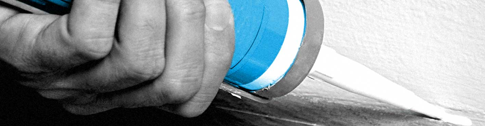

Bevestigingsmaterialen
Schroeven, bouten, moeren, draadeinden, ringen, ankers en pluggen. In RVS en verzinkte uitvoeringen voor uiteenlopende toepassingen.
Bekijk de mogelijkhedenVoor bouw, industrie & werkplaats
Bekijk onze productgroepen. Heeft u een specifieke toepassing of maat in gedachten? We zoeken graag met u mee.
Schroeven, bouten, moeren, draadeinden, ringen, ankers en pluggen. In RVS en verzinkte uitvoeringen voor uiteenlopende toepassingen.
Bekijk de mogelijkheden
Handgereedschap, elektrisch en pneumatisch gereedschap, machines en werkplaatsuitrusting. Voor dagelijks gebruik in bouw en werkplaats.
Bekijk de mogelijkheden
Boren, frezen en zagen, plus schuur- en slijpmiddelen. Stem uw gereedschap af op het materiaal en de gewenste afwerking.
Bekijk de mogelijkheden
Lijmen, kitten en chemische producten voor bevestigen, afdichten, beschermen en onderhouden.
Bekijk de mogelijkhedenBeslag en inrichting voor meubels, kasten en interieurbouw. Van een passende scharnier tot complete ladesystemen.
Bekijk de mogelijkhedenVertel ons wat u nodig heeft. We denken graag met u mee.